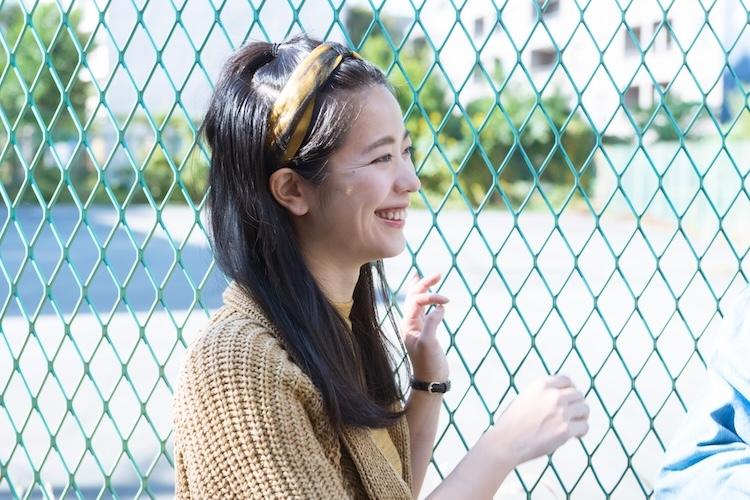
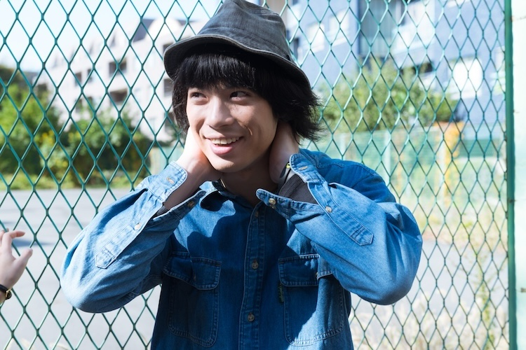
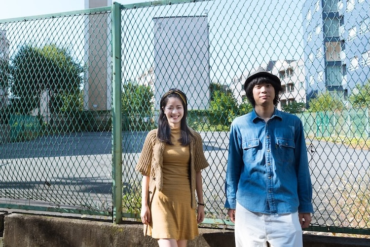
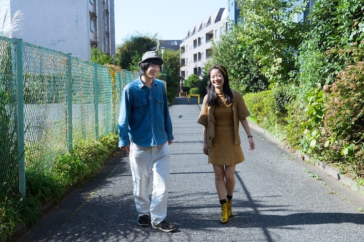

黒猫チェルシーのフロントマンで、近年は俳優としての活躍も著しい渡辺大知が監督を務め、PFFにて審査員特別賞を受賞、国内外のいくつかの映画祭に招待された映画『モーターズ』の劇場公開が決まった。田舎の整備工場で働く男達とひと組のカップルの出会いと別れを描いたこの人間讃歌は、大学の卒業制作として同世代のスタッフのみで撮影されながら、味わい深い映画的純度を備える。おそらくそれは「渡辺大知」という人の周囲を巻き込む吸引力がもたらした。本作の劇場パンフレット掲載のスタッフ総勢７名の座談および、主演の渋川清彦による対談にて、制作秘話や現場での逸話を伺ったが、ここでは、渡辺監督に加え、紅一点としてヒロインのミキを演じた女優、木乃江祐希（ナイロン100℃）の２人に迫った。
事前に頂いていた脚本から、こういう方なんだっていうイメージを持っていたんですけど、お会いして話したらそのままで。（木乃江）
先日『モーターズ』のパンフレットのスタッフ座談会の聞き手を担当させて頂いて。
渡辺：
ありがとうございました。次の日に（撮影監督の）中里君から電話が掛かってきて、あの日の夜の記憶が全く無いらしくて（笑）
木乃江：
え、一体どういう座談会だったんですか？ （笑）
渡辺：
中里君は今やっている仕事が本当に忙しくて、それもあって遅れて来たんですけど、それが深夜３時過ぎで（笑） でも、それも含めて面白くなっているので、是非、読んで頂きたいです。
そのパンフレットでは、主演の渋川清彦さん、犬田文治さんにも話を伺ったので、今回は木乃江さんが演じたヒロイン、ミキにフォーカスできたらと思っていて。
渡辺：
木乃江さんに本当にすべてを託してしまってますからね。本当にこの映画の紅一点でしたから。
ミキはとても魅力的な存在ですよね。そういう脚本と演出だったということでもあると思いますが。
木乃江：
ありがたいです（笑）
木乃江さんは、脚本と照明で参加している磯さんの知り合いだったとか。
木乃江：
はい。磯君と（多摩美術）大学の同級生だったんです。
渡辺：
脚本を書いてる段階から、磯君の中では木乃江さんが浮かんでたらしいんです。僕のイメージがどうなのか相談してからと思ってたみたいで、いざ探すとなった時に、知り合いを中心に何人か候補の女優さんと会って話をしているタイミングで、磯君が木乃江さんのことを紹介してくれて。それで実際に会った最初の印象で、速攻でお願いしようって決めました。
木乃江：
大知さんの映画は観ていたし、大学の友達が大知さんと交流があったりしたので、なんとなくは知っていて。挨拶だけしたことも実は１度だけあって。忘れてるでしょ？ （笑）
渡辺：
え、忘れてるというか、今、初めて知りました（笑）
木乃江：
私も詳しいところは憶えてないんだけど。
渡辺：
舞台の楽屋とかですかね？
木乃江：
場所とか状況は憶えてなくて。

渡辺監督は役者として本田劇場に立ってます（『男子!レッツラゴン』）けど、ナイロン100℃所属の木乃江さんは、舞台では先輩にあたりますね。
木乃江：
いやいやいや。やめてください（笑）
渡辺：
舞台はあれ１度だけで、僕は全然まだまだだったので。
木乃江：
そんなことなかったじゃないですか。
渡辺：
いやいや。でもあらためて役をお願いする時に会ったのは、お洒落なオープンテラスのカフェでしたね。僕の大好きな珈琲を出してくれる店で。
木乃江：
そっか、最初はちゃんとしようとしてくれたんだよね。それ以降は、タバコの煙が漂っている昭和な雰囲気の喫茶店で（笑） 事前に頂いていた脚本から、こういう方なんだっていうイメージを持っていたんですけど、お会いして話したらそのままで。
渋川さんも「映画のタイトルは『渡辺大知』でいいんじゃないか」みたいに仰ってました。
木乃江：
泥臭くてカッコつけてる感じがそのままだったんです。あ、これは本当に素直に書いたんだなって思って。
渡辺：
会ってすぐに「この主人公の男、気持ち悪いんですけど！ 」って。わ、いきなり戦いにきた！ って思って（笑） でも、その理由を聞いた時に本当に読み込んできてくれてるのが分かって。流して読んでたら気付かないような細かいところを指摘してくれて。変えたら映画が変わってしまうような肝の部分ではなくて、もっと誇張した方が面白くなりそうなところとか、逆にやりすぎちゃってベタベタしてるところとか細部について、女性の意見を聞かせてくれた感じがあったんです。脚本が完成してから読んでもらった最初の女性だったので、参考になったと同時に、強気だけど真摯に向き合ってくれて、一緒に作りたいなって思わせてくれました。
男とばっか喋って感覚が麻痺してるところに突如現れて一撃を喰らわしてくれる女性という意味で、木乃江さんはピッタリでした。（渡辺）
木乃江さんの意見で、ミキにリアリティを与えていったのは具体的にどういう部分だったんですか？
木乃江：
どういう気持ちで書いていったのか色々話していった時に、突き詰めていくと、「うちの姉貴がやばくて、姉貴の話にしたかった」みたいなことを仰ってたんです。お姉さんのファンキーな話を楽しそうにしていて（笑） それで、ミキは大知さんのお姉さんに近いような役じゃないかなって思ったので、それで膨らませて役作りした感じがありましたね。
渡辺：
そう、こういうことも言ってくれるじゃないですか。今話すまで、姉貴の話をしたこと僕、忘れてましたから。
木乃江：
作品を作る前に、喫茶店で話したりする中で、ヒントになるようなことを沢山話してくれてて。昔好きだった人の話とかも（笑）
渡辺：
それも忘れてます（笑）
監督の女性観に寄せていくと、それがお姉さんということだったんですね。
木乃江：
そうなんです。あと、大知さんと磯君の２人でずっと脚本を魂詰めて書いてたと思うんですけど、劇中にあるトイレが流れなくなる話って、書いてる最中の２人の実際の話が元になっているんです。ああいう感覚って女性からは思いつかないから、女性のこんなところに惹かれるんだって驚いて。でもそういうことをする女性と、しない女性って絶対分かれると思うので、それで役のイメージが掴めたのはありました。
トイレのシーンは重要だったと座談でもスタッフ全員が口を揃えていましたけど、実際、現場ではそのシーンの撮影はどうだったんですか？
渡辺：
それがですね…。他のシーンの撮影で予定より時間を掛け過ぎちゃってて、ピリピリしてて。
木乃江：
ピリピリしてたよね。
渡辺：
それもあって、トイレのシーンはワンテイクでした。ただ、田中が水洗タンクのチェーンを歯ブラシで引っ掛けようとする手の寄りの画をかなり拘って、５、６回くらい回して撮ってたら、「引きを１回しか撮らなかったのに、何で寄りをこんなに撮るんだよ」って、KEE（渋川）さんに言われて。
木乃江：
「もっとゆっくり官能的に手を入れて」とか求めたよね（笑）
渡辺：
もう少しエロくとか言ってたら、「それどういうことだよ。お前がやってみろよ（笑）」って言われて。確かに言われて当然というか（笑）

渋川さんの気持ち分かる気がします（笑） その後で、喫煙所で田中とミキが煙草を吸うシーンの長回しもいい空気感で。あれは台詞通りなんですか？
渡辺：
あそこは良いってよく言われます。間とか言い回しは２人の自然な形でやって頂いてますけど、話してる内容はアドリブではなかったですね。
木乃江：
台詞は台本通りだったよね。確か１回リハーサルをやってみて、「その感じで」ってなった気がする。
渡辺：
実はリハーサルの後に、テストでカメラ回しますって言ったのをそのまま使ってるんです。KEEさんは、やっぱり元がカッコいいから、芝居が固まってくるとカッコよくなるから、テストの抜いてる感じが良くて。シリアスなシーンは何度も撮ったテイクを使ったりしてるんですけど、ああいう何気ないシーンはテストの方が良かったことが多い気がしますね。木乃江さんも自然体だったので、見てて２人が話してる空間に居たくなる雰囲気というか。
それは伝わってきますね。ミキを演じるにあたって、この田中という人物に対してどういう印象を持って挑みましたか？
木乃江：
後半に向かって気持ち悪いってなっていくんですけど（笑） 恋人の前田と色々あったミキは、桃源郷のような変な場所に不時着して、成りゆきでそこに滞在することになりますけど、あの喫煙所で話すシーンで田中さんが可愛らしくて興味を持てたから、車の中で話したりもしたと思うんです。知らない男性の車に普通は乗らないと思うので。それは大知さんとも話しましたね。
渡辺：
脚本読んでもらった時に確かに言われました。いきなり会ったばかりの人の車には乗らないって。気を許し過ぎだって。
木乃江：
よっぽど気があれば乗るかもしれないけど。
渡辺：
木乃江さんに言われた時に悩んだんですよ。でも文字で見ると、えっ！ と思うことも、画になったら意外と見れるかなって。特にあの車で話すシーンは台詞がオフだったので。
その車のシーンで、ミキはワンカップを飲んでますけど、終盤でミキはネクターを持っているシーンもあって、そういう小物にも拘りを感じました。
木乃江：
あぁ、好きなんだなって思いますよね。
渡辺：
好きですね。細かい話になるんですけど、この映画、飲み物は出てきますけど、食べ物は撮りたくなかったので、ほぼ出てこないんです。蕎麦とか牛丼も器だけが見えるようにしてて。食べ物ってパンチが強いから、美味しそう！ って引き込めたらいいけど、撮れないんだったら撮らないようにしようって気持ちがあって。でも、ネクターについてはすごく拘りました。
木乃江：
ネクター、ネクター、言ってたね（笑）
渡辺：
ちゃんと背景の壁と合うような配色ってこともあったんですけど、単純にネクター飲んでて欲しいなぁって。
木乃江：
そうなんだ（笑） 私、こういうところで、大知さんの心の中を垣間見たような感じがしちゃうんですよね。
渡辺：
でも、男とばっか喋って感覚が麻痺してるところに突如現れて一撃を喰らわしてくれる女性っていう意味で、実際に最初に会った時もそうだった木乃江さんはピッタリでした。
男の考えるカッコ良さに対して、女性のミキはしっかり引かないと、この物語は成立しないなと思ったんです。（木乃江）
恋人役を演じた前田裕樹（バンド、SPANGLEのギタリスト）さんとのお芝居の呼吸はいかがでしたか？
渡辺：
確かにそれは聞きたいですね。
木乃江：
彼はすごく自然なんです。普段は役者をやられてない方なのに、ああいう生き物みたいな感じがあって。
渡辺：
すごいよね。僕もビビりました。タケオ役のドッグ（犬田文治）は最初はちょっと違ったんです。やり過ぎて、芝居がかっちゃってた。
木乃江：
最初は眼力を入れがちだったよね。
渡辺：
「田中さん、俺、それ違うと思うんすよ！ 」とか、普段使わないような息んだ口調になったりして。でも感覚掴んでからは良くなった。パンフレットの対談でも話してますけど、KEEさんに２人で飲みに連れてってもらってから打ち解けて自然に出来るようになったらしいんです。その点、前ちんはそういう存在感が最初からあったというか。
木乃江：
彼にはミキが好きになる説得力があったんですよ。付き合ってる説得力って難しいなって思うんです。前田のどういうところに惹かれて付き合ってるのかなって考えた時に、ミキみたいな強い女性が甘えたり頼ることが出来たりとか、逆にそのままだから苛ついたりとか、そういう性質に彼はピッタリ嵌っていたので、彼に対して無理して仲良くすることなく仲良くなれたんです。

２人の仲は徐々にギクシャクしていきますけど、田中がその隙間を埋めるようなこともなく、結果、通り過ぎていきますけど、最終的に２人にとってはどんな存在だったと思いますか？
渡辺：
環境は日々移ろいゆくというか、色んな人と一瞬だけ会って別れたりして、２人と田中はもう会わないかもしれないけど、どこか変わってる気がする。出会いってそれぐらいでいいなって思うんです。吹き抜ける風みたいな。
木乃江：
田中の役って、本人はカッコいいって思ってやってるじゃないですか。色んなところでセコくて、それがバレたりするけど、最終的にはカッコいいと思ってるところがある。そういう男の考えるカッコ良さに対して、女性のミキはしっかり引かないと、この物語は成立しないなと思ったんです。
渡辺：
なるほど。
木乃江：
田中の行動に対して気持ち悪いなって思うんだけど、最後でふと思い出して、懐かしいなとか、変なおじさんいたなって、たぶんそれくらいのことだと思うんです。
渡辺：
ばっちりじゃないですか。そう思ってやってほしいと思ってました。
木乃江：
あの最後のシーンについてはかなり話し合ったよね。
渡辺：
そうですね。ミキにとって嬉しいけどキモいみたいな程良いバランスにしたくて。
ああいったディテールに田中の愛らしさがあって憎めない。それは映画全体に溢れてますよね。
木乃江：
一歩間違うと気持ち悪いストーカーじゃないですか。仕事中にミキが田中に連れ出されるシーンも内心では勘弁してくれって思ってる。でも、そういう応対こそリアルだと思うんです。
渡辺：
田中は1人で盛り上がってるというか、空回りしてるんですよね。
木乃江：
田中のロマンチストなところ、男がカッコいいと思うようなことって、それとは裏腹に共感を得ず引いてしまう人がいることで、絶妙なバランスを保ってる気がするんです。私、完成した映画を観た時にそこが素晴らしい、好きだなって思ったんです。脚本を読んで文字だけでは分からなかったことが、芝居をして、編集して、形になった。一歩間違ったらニュアンスが変わってしまうようなところをすごく繊細に作っているなって。
渡辺：
これ、めっちゃ嬉しい。でも、木乃江さんだったり、渋川さん、川瀬（陽太）さん、山本（浩司）さん達が出演してくれたことが感慨深いし、盛り上がったところはあったんですけど、僕としてはプロで役者をやられている方も、普段は整備士の鹿江さんや他の出てくれた友達も、どちらも人として好きだからって理由が大きいんです。真摯にこの映画に向き合ってくれた人達とやれたことが嬉しくて。スタッフにプロは1人もいない中で、出演してくれたその器に助けられましたね。
ミキも同じ空気の中で、同じ音楽を聴いて、同じ感覚で話してる同じ仲間っていう気持ちで撮ってたんです。それを感じてほしい。（渡辺）
今後、木乃江さんが、女優をやっていく中でこの映画はどういうものになりそうですか？
渡辺：
え、そんなレベルの高い質問やめてください。でも、少しは何かのプラスになってくれてたら嬉しいですけど…。
木乃江：
初めの段階で脚本を頂いて、それに対して意見を言えて、みんながみんな自分の作品って言えるようなものになってると思うんです。ワーっと走っていく大知さんの勢いに乗っかったイメージがあって。私も脚本がいいなって思ったから沢山読み込んだんですけど、これはもっと良くしたいって強く思ったからこそで。きっとスタッフ、キャスト全員に言えることで、作品にそういう吸引力があったと思うんですよ。これはなかなか出来ない経験で、作品をつくるってこうでなくちゃなって思ったんですよね。お仕事していく中で、途中からパッと参加して、パッと抜けるってことって多いんですけど、この映画で色んな人の力が合わさって作品になっていく過程を丁寧に見れたことで、一段とお芝居が好きになりましたね。今後、どの作品に出る時もあの時の気持ちで挑まなくちゃなって、ピリっとした気持ちになります。
監督、嬉しそうですね。
渡辺：
いやぁ、感激です。これはパンフレットにも載せましょう（笑） 今の言葉は本当に残したいです。

では、最後に映画を観てくれる方々に一言。
木乃江：
男臭い空気の映画なのに、観る人によって感じ方が違うと思うんですよ。そういう匂いを嗅いで映画館を出て行った後で、自分の生活に小さな変化があったら嬉しいなって思います。
この映画のどんなミキを観てほしいですか？
渡辺：
…（長考）。
こういう部分に表れてますよね。言葉選びもすごく真摯。不器用だけど。
木乃江：
絶対に嘘をつかない。適当なことも沢山言うけど（笑）
渡辺：
（笑） 田舎の整備工場にいる主人公達は、毎日同じような仲間と話してるだけの連中ですけど、突然そこにやってきてしまうミキもそういう同じ空気の中で、同じ音楽を聴いて、同じ感覚で話してる同じ仲間っていう気持ちで撮ってたんです。それを感じてほしいし、あとはあれですね、ミキを好きになってもらいたいです、全国の男性に。